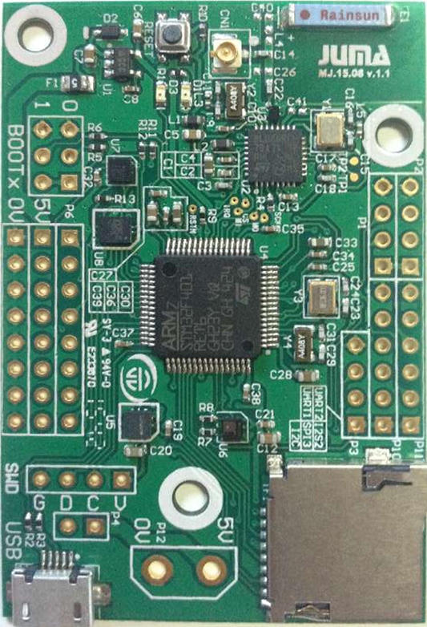

CANNON

原型开发的痛点
- 成本&周期: 目前智能硬件除了蓝牙SoC开发平台，很少有合适的现成的平台，就需要制作电路板，移植软件等，搭建周期长，无法快速验证一个想法。- 开发板体积/供电: 原厂的MCU开发板通常是用来做软件开发，不考虑制作快速原型，体积大，不能用电池供电，导致无法制作一个小尺寸可移动的产品原型，影响快速验证原型。
- 一致性的软件平台: 对于应用开发者，要把底层的各种软件都整合到一起，各层都调试到比较好的水平，门槛高。
设计目标
- 小钢炮主板本身构成一个完整的蓝牙智能硬件系统，以及相应的调试好的底层软件。- 可以通过丰富接口扩展更多配件。
- 无需重做PCB，调试底层软件，只需应用编程即可搭建自己的智能硬件。
- 提供完整的智能硬件范例工程做为起点
主要资源:
1. 处理器STM32F401
- ARM 32位 Cortex-M4 CPU，最高可达84Mhz frequency。
- 512Kbytes Flash存储，96Kbytes SRAM。
- 1.7V-3.6V供电电压，可外接426Mhz外部晶振，CANON外接的为16Mhz晶振和为RTC校准提供的32.768k晶振。
- 3组I2C接口，CANON使用了I2C1，留出了I2C1与I2S2测试接口。
- 4组SPI接口，CANON使用了SPI2，留出了SPI3测试接口。
- 3组USART接口，CANON留出了UART1、UART2。
- GPIO测试接口，CANON留出了GPIO_A0、GPIO_A1、GPIO_A8、GPIO_B0、GPIO_C13、GPIO_B8、GPIO_C5、GPIO_C7。
- SDIO接口CANON安装了TF插槽。
2. 蓝牙BLE芯片BlueNRG - 支持Master与Slave单模
- 嵌入式标准蓝牙低功耗协议栈的GAP、GATT、SM、L2CAP、LL、RF_PHY层
- profile层在MCU实现
- 发射功率最高可达+8dbm
- MCU通过SPI控制BlueNRG
- 16Mhz与32.768khz外部晶振
3. 传感器阵列
- LSM303AGR磁力计
- LSM6DS3六轴陀螺仪
- HTS221温湿度
- LPS25H气压计
4. 板载锂电池充电电路，MicroUSB
5.强大的扩展性: SD卡，UART，I2C，GPIO，USB等
6.其他，例如：LED,按键，BOOT接口等
使用
使用者可以自行对开发板进行编程，通过SDK里面提供的移动端调试工具进行数据交互，具体烧录方法，参看开发指南.

适用产品:
-智能手表
-智能健康设备
-家居与工业自动化
-远程控制
-移动终端外设、PC外设
优势:
-传感器阵列
-低功耗蓝牙芯片
-提供完整的解决方案
尺寸:
-电路板: 60mm x 40mm